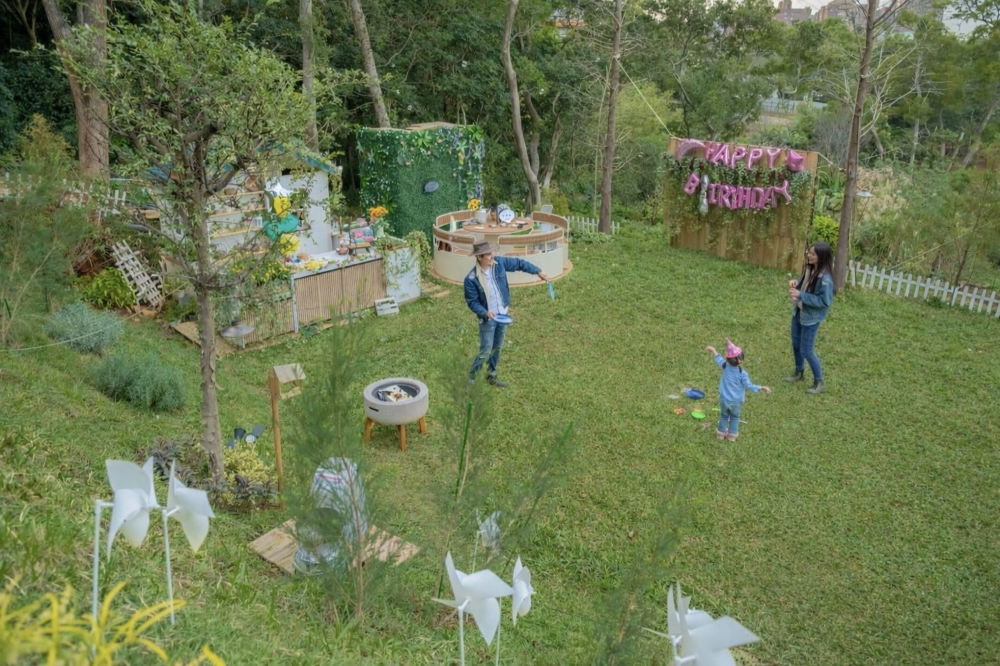

第一次露營要準備什麼？
從穿著、睡覺到餐具，用清單幫你收斂焦慮。

從區域、玩法到裝備與常見問題，把最常搜尋的露營話題整理成好讀的短版入口，再連到深度文章與場地介紹。
同一座山坡，白天是樹影與草地，傍晚開始換成暖色燈光與聊天聲。以下皆為營區實景風格示意。




白色圓頂帳篷結合森林綠意與柔和室內空間，帶來不同於傳統露營的舒適體驗。

每一區皆擁有寬敞草地與獨立露營動線，不與陌生人共用，保有真正放鬆的包場感。

不與陌生人共用空間。專為 8-12 人設計的小型私密包場豪華露營，打造朋友、家人、團體能真正好好聊天放鬆、享受自然的空間。
位在桃園楊梅的靜謐山坡上，近交流道、火車站。距離台北、新竹僅 30-50 分鐘車程。交通便利卻遠離塵囂，是北部地區少見的森林系包場露營、包場活動地點。

大草地＋戶外公共空間｜共享客廳生活感
這裡是我們的綠色客廳，一起在草地上煮杯咖啡，聊到星星滿天。熱氣球房結合圓頂帳篷與專屬草地活動空間，適合朋友、家人、親子一起享受自在放鬆的露營生活感。
查看熱氣球房
雙圓頂星空帳篷｜森林景觀大浴室＋奢華住宿
一帳一世界，享受星空帳的奢華。專屬浴缸，透過全景玻璃望向森林花園，在靜謐中擁抱浪漫。雲朵房適合想要享受更安靜、更完整住宿氛圍的旅人，在森林裡感受慢下來的夜晚。
查看雲朵房
整個露營區依著山坡地形，自然形成三層不同高度的森林平台。從草地活動到帳篷住宿，每一層都有不同的生活感與視野。
最下層的平台是雲朵房的專屬草地空間。被綠意包圍的草地讓人可以自在活動、放鬆散步，也讓整個露營區多了一份貼近自然的寬敞感。
中段平台是熱氣球房專屬的戶外生活空間。這裡有寬敞草地與戶外座位區，適合聊天、吃晚餐、煮咖啡，像一個屬於朋友與家人的森林客廳。
位於最高處的森林平台，設置兩座白色圓頂帳篷。左側是雲朵房，右側是熱氣球房，在樹林與天空之間，擁有最安靜也最開闊的視野。
這裡不是人多熱鬧的大型露營區，而是一個更安靜、更重視空間感的小型森林露營住宿。整體營區分為兩個主要露營區塊，每區皆有獨立圓頂帳篷、草地空間、戶外座位與生活機能配置。
對於想要真正聊天、放鬆、看星空、共享晚餐的人來說，這樣的空間更像是一段森林裡的生活時光，而不只是住一晚。
A：不需要，現場為已設置完成的圓頂帳篷住宿空間，可直接入住。
A：每個露營區塊皆為獨立使用，不是一般密集型共用營區。
A：入住時間為下午 17:00 後，退房時間為隔日上午 10:00 前。
A：目前採加入 LINE 聯絡方式預約。